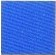
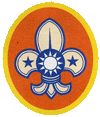
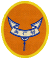
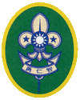
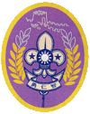
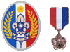

| 童軍級別 | 年齡 | 女童軍級別 |
| 服務員 | 20- | 服務員 |
| 羅浮童軍(附圖為羅浮童軍肩章) | 18-26 | 資深女童軍 |
| 行義童軍(附圖為行義童軍肩章) | 15-18 | 蘭姐 |
| 童軍(附圖為童軍肩章) | 11-15 | 女童軍 |
| 幼童軍小狼 | 8-11 | 幼女童軍(小青蛙) |
| 稚齡童軍(狼寶寶) | 6-8 | 小小女童軍(小蝌蚪) |
首先在這裡補充一個小知識：女生是可以適用童軍進程，但男生不適用女童軍進程的喔!
| 級別名稱 | 考核標準 |
| 初級 | 通過團內舉辦之兩天一夜初級考驗露營，其考驗項目包含：『童軍精神』、『群體生活』、『初級繩結』、『手號操』、『金氏遊戲』、『國旗』、『基礎炊事』、『歌唱』、『童軍諾規銘筆試』、『童軍常識筆試』 |
| 中級 | 有初級童軍資格且通過聯團舉辦之四天三夜中級考驗露營，其考驗項目包含：『童軍精神』、『群體生活』、『中級繩結』、『工程繩結』、『生火斷繩』、『金氏遊戲』、『架帳』、『炊事』、『雙旗』、『無線電』、『童軍諾規銘筆試』、『刀斧鋸使用』、『方位』、『估測』。及行前作業：『昆蟲/植物報告』 |
| 高級 | 有中級童軍資格且通過市會舉辦之六天五夜高級考驗露營，其考驗項目包含：『童軍精神』、『群體生活』、『高級繩結』、『工程繩結』、『童軍諾規銘筆試』、『童軍常識筆試』、『訊號』、『CPR』、『擔架製作』、『傷患搬運』、『三角巾包紮』、『三項工程』、『刀斧鋸使用』、『生火斷繩』、『工字型旗桿』、『估測』、『製圖』、『簡易電工』、『自行車』、『運動技能』。及行前作業：『猴子橋模型』、『手工藝』、『植物蠟葉標本』、『露營計畫書』、『工程計畫書』(點我連結行前作業範例) |
| 獅級 | 有高級童軍資格且取得專科章五種以上，其中必須具有下列三種：『社區公民專科章』、『旅行專科章』、『露營專科章』。並填寫申請書通過者(點我連結申請書) |
| 長城級 | 有獅級童軍資格且取得專科章十一種以上，其中必須具有下列三種：『國家公民專科章』、『急救專科章』、『游泳、自行車、越野專科章三種擇一』。並填寫申請書通過者(點我連結申請書) |
| 國花級 | 有長城級童軍資格且取得專科章十八種以上，其中必須具有下列五種：『世界公民專科章』、『生態保育專科章』、『測量專科章』、『植物、昆蟲、賞鳥專科章三種擇一』、『音樂、舞蹈、攝影專科章三種擇一』。並填寫申請書通過者(點我連結申請書) |
以上圖片如有冒犯肖像權，請盡速聯絡本站，本站將會立即修正